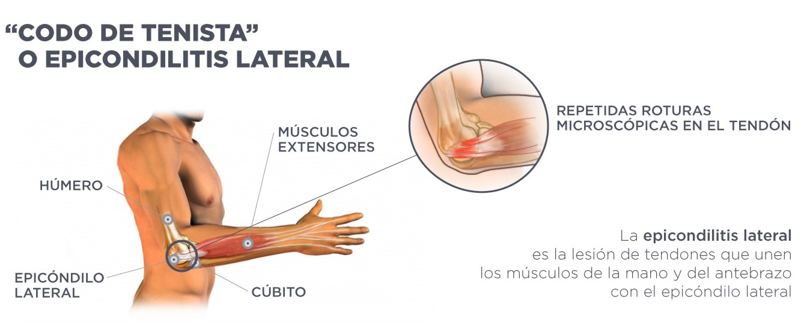
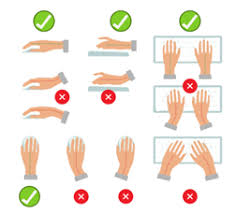
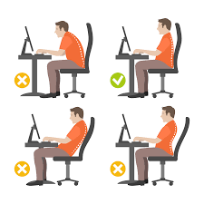
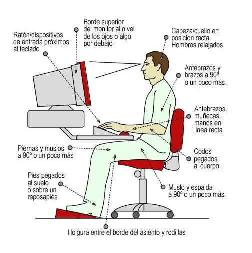
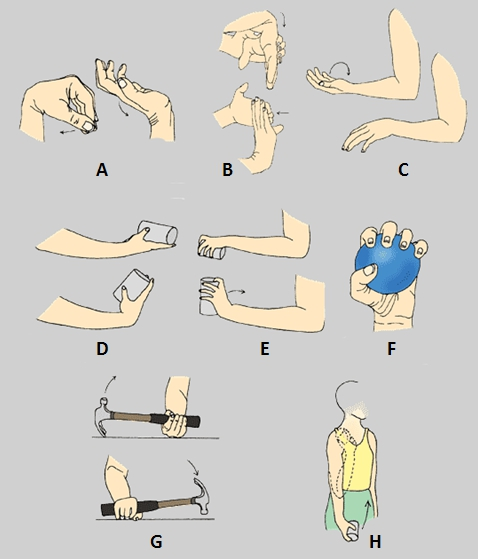
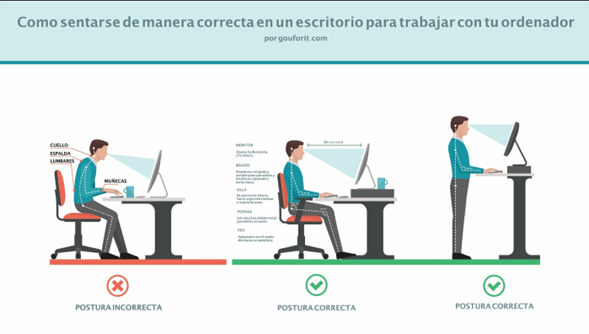
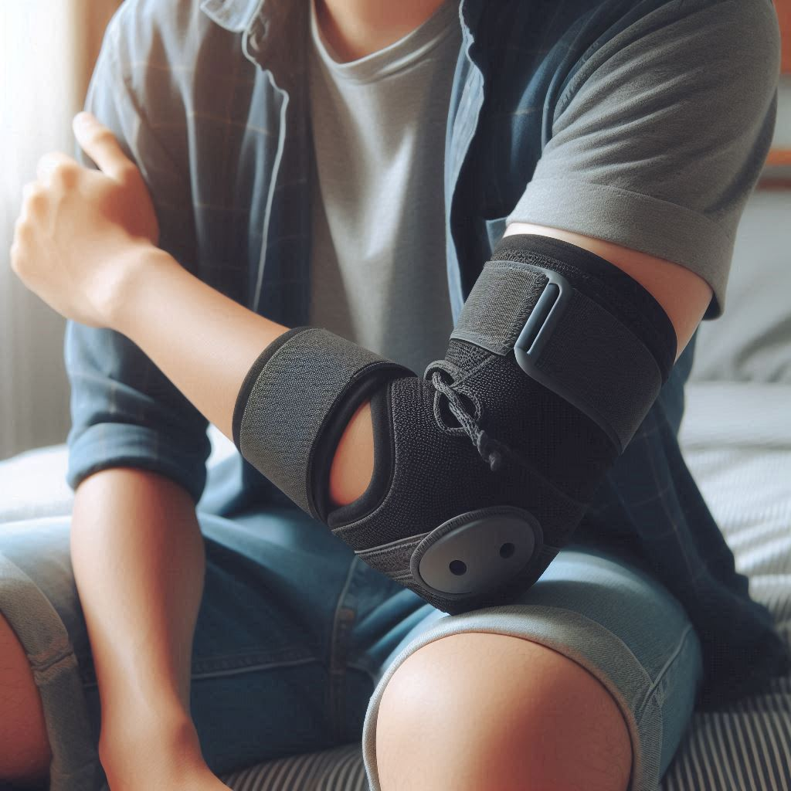
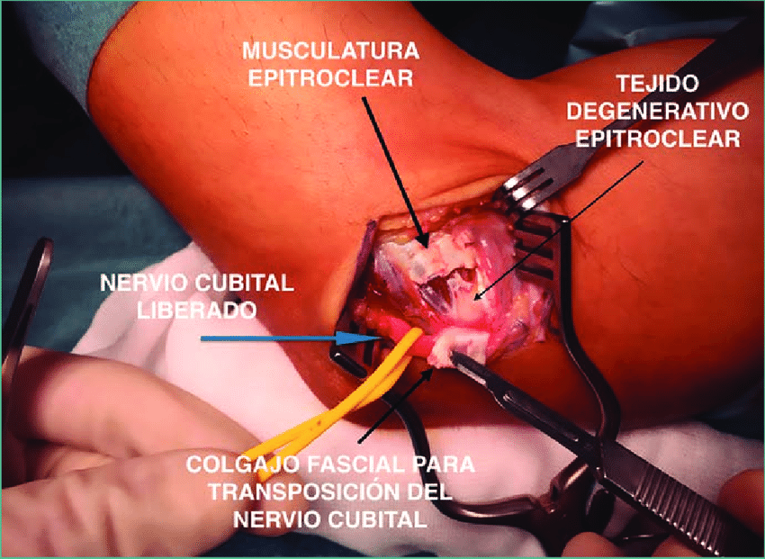

Tu Cuerpo, Único Lugar Para Vivir
Patología:
Epicondilitis lateral (Codo de tenista)
Que es:
Es una lesión comúnmente conocida como "codo de tenista", pero no es exclusiva del deporte. Afecta a personas que hacen movimientos repetitivos con el brazo, la muñeca y los dedos, como muchos programadores, digitadores y diseñadores. Ocurre cuando los tendones del antebrazo, justo donde se conectan con la parte externa del codo, se inflaman o se desgastan por el uso excesivo.
.jpeg)

Causas:
- Usar el teclado o el ratón durante muchas horas seguidas sin descansos.
- Hacer movimientos repetitivos con la muñeca y los dedos.
- Mala postura al trabajar (brazos muy tensos, hombros levantados).
- Apoyar constantemente el codo sobre superficies duras.
- No tener una configuración ergonómica adecuada en el escritorio.



Sintomas:
- Dolor en la parte externa del codo, que a veces baja por el antebrazo.
- Molestia al girar objetos (como una manija o una botella).
- Debilidad al sostener cosas, incluso livianas como una taza.
- Dolor al escribir mucho tiempo en el teclado o usar el ratón.⌨
- Sensibilidad al tocar el área afectada.


Medidas Preventivas:
- Asegurarte de tener un espacio de trabajo ergonómico (teclado, ratón, silla y monitor bien ubicados).
- Usar ratones ergonómicos o verticales y teclados divididos si es posible.
- Hacer pausas activas cada 30 a 60 minutos para estirar brazos y muñecas.
- No apoyar el codo en superficies duras por mucho tiempo.
- Evitar movimientos repetitivos excesivos y variar las tareas cuando sea posible.
- Realizar ejercicios de calentamiento y estiramiento antes y después de largas jornadas frente al computador.



Tratamientos:
- Descanso del brazo afectado.
- Aplicar hielo varias veces al día para reducir la inflamación.
- Tomar antiinflamatorios (siempre con indicación médica).
- Hacer fisioterapia: ejercicios de estiramiento y fortalecimiento del antebrazo.
- Usar una banda o codera especial para aliviar la presión sobre el tendón.
- En casos muy graves, pueden indicarse infiltraciones o, rara vez, cirugía.

